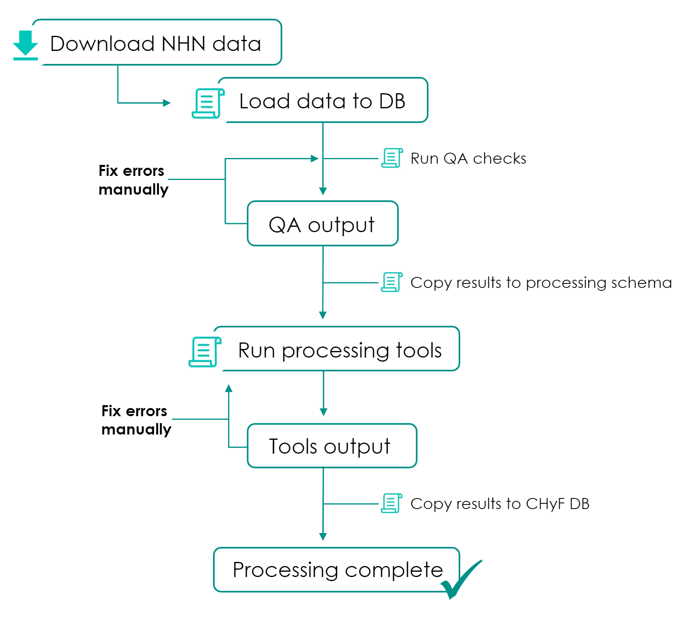
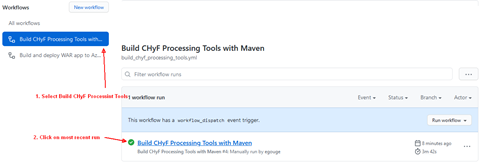
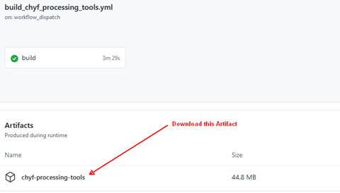

NHN - CHyF Conversion¶
This document describes the steps and scripts required to convert data from NHN into the CHyF format.
Workflow Overview¶
Processing Scripts¶
All python scripts referenced below are located in the github repo:
The CHyF processing tools can be downloaded from github. An action has been created to build the tools and store them as an artifact:
Click the most recent workflow run, then under Artifacts, download chyf-processing-tools.
 Processing Steps¶
Step 1: Download Data¶
Download NHN datasets as filegeodatabase zip files (English):
https://ftp.maps.canada.ca/pub/nrcan_rncan/vector/geobase_nhn_rhn/gdb_en/
Step 2: Load Data¶
- Python Script:
nhn_data_load.py- Usage:
nhn_data_load.py <host> <port> <database> <user> <password> <nhnworkunit> <zipfile>- Example:
nhn_data_load.py localhost 5432 chyf postgres sql 07ha000 C:\temp\nhn_rhn_07ha000_gdb_en.zip- Description:
This script reads the data in the zip file, loads it into a schema named
nhn<workunitid>(ex.nhn07ha000), does some initial data processing and then runs the QA script automatically (step 3). Processing includes: snapping data to grid, mapping NHN attribute values to CHyF attribute values, creating and populating TerminalNodes layer.The initial population of the TerminalNodes table is based on the intersections of the hydro network and waterbodies with the work unit boundary layer. An attempt is made to populate the flow_direction attribute based on the NHN data, however any nodes for which flow_direction can’t be determined will need to be set manually (these are reported as a part of the QA script). Any additional terminal nodes will also need to be added manually.
Step 3: QA Data and Manually Fix Results¶
Note
The QA script is run by default as a part of the load process.
Once the initial output is reviewed and the returned errors are corrected the script should be run again to verify all issues were resolved.
- Python Script:
nhn_data_qa.py- Usage:
nhn_data_qa.py <host> <port> <database> <user> <password> <nhnworkunit>- Example:
nhn_data_qa.py localhost 5432 chyf postgres sql 07ha000- Description:
The QA script creates a output table named
nhn<workunitid>.qaerror(ex.nhn07ha000.qaerror). This table contains all the details about the errors and warnings generated by the QA script.
Column |
Description |
|---|---|
id |
The unique identifier. |
type |
A WARNING or ERROR value depending on the severity of the issue. |
message |
A description of the problem. |
geometry |
Point geometry that roughly identifies the position or feature of the problem. |
Errors are also logged to the console.
Important
Not all errors have geometries. If reviewing the errors in a spatial program (QGIS), some errors may not be shown in the table. The results table should be queried directly or the QA script output should be reviewed to ensure all errors are resolved.
- Resolving Errors:
All data can be loaded into QGIS directly from the database and walk through the errors/warnings table, wditing features as nessessary.
- Current QA Checks:
Flow_direction is populated for all terminal nodes.
No null or empty geometries.
All geometries are valid and simple.
No waterbodies represent island in another waterbody.
Waterbodies don’t overlap.
Flowpaths don’t overlap - I guess this could be valid if a pipe runs under/over a stream.
No non-skeleton flowpaths inside waterbodies.
Degree 4 nodes.
Waterbody subtype of unknown and a name provided.
Waterbody intersects another waterbody of the same time with more than 3 vertices that are the same.
Step 4: Prepare data for Flowpath Tools¶
- Python Script:
nhn_2_fpprocessing.py- Usage:
nhn_2_fpprocessing.py <host> <port> <database> <user> <password> <nhnworkunit>- Example:
nhn_2_fpprocessing.py localhost 5432 chyf postgres sql 07ha000- Description:
This copies the data from the
nhn<workunitid>schema into thefpinputschema to be used as input to the flowpath processing tools. Drops all non-required data fields.The schema name
fpinputis configured in the python script, so if you want to use another schema you can change this in the script.- Optional:
At this point you could drop the schema
nhn<workunitid>as it is no longer required. However initially it might be useful to keep this data around until the entire process has been more thoroughly tested.
Step 5: Process Next Work Unit (Optional)¶
You can stop here and return to Step 1 preparing the next work NHN work unit OR you can proceed to the next step to run the flowpath processing tools.
Multiple work units can be prepared and copied into the fpinput schema before running the flowpath tools. In this case when you run the flowpath tools all prepared datasets will be processed.
Step 6: Flowpath Processing Tools¶
- Java Program:
flowpath-constructor.bat (windows) or flowpath-constructor.sh (linux)
Note
Version 1.2.0 (or later) of the flowpath processing tools must be used.
- Usage:
flowpath-constructor.bat -d "host=host;port=port;db=database;user=username;password=password" inputschema outputschemaComplete details on running the tools can be found here: https://docs.google.com/document/d/1Fbz89ifYdQtq_FvaouM8co2CpO-R_JvlQ-3qaSe_HZw
- Example:
flowpath-constructor.bat -d "host=localhost;port=5432;db=chyf;user=postgres;password=sql" fpinput fpoutput- Description:
The flowpath processing tools read all the data for an aoi from the input schema, generate skeletons, directionalize and rank them and write the results to the output schema. Any error/warnings generated during this process are logged to the console and writing to the output schema errors table. The
fpinput.aoitable is used to control the flowpath processing tools.Column
Description
id
The unique identifier for the aoi.
name
The NHN work unit name (DATASETNAM).
geometry
The aoi geometry loaded in Step 1.
status
The current status of this aoi with regards to flowpath processing. Valid values are: READY - the aoi is ready to start processing; FP_PROCESSING - the aoi is currently being processed; FP_DONE - the aoi has completed flowpath processing but there may be errors; WS_PROCESSING - watersheds are being generated for the aoi; WS_ERROR - an error occurred while watersheds were being generated for the aoi; WS_DONE - watersheds have been generated for the aoi.
The status column is used to control the processing of AOI’s by the flowpath processing tools. When run the tools finds the next AOI with a state of READY, updates that state to FP_PROCESSING, processes the data then once complete sets the state to FP_DONE (or error). Multiple instances (on different computers) can run the flowpath processing tools at the same time and they will each process a different AOI (once an aoi is flagged as processing, no other instances will process the AOI).
Alternatively you can tell the flowpath processing tools to run a single aoi in which case it will ignore the status field and process the aoi. We recommend not to use the tools this way as it may result in multiple users processing the same aoi. If you want to re-run an aoi manually update the status field to READY and (if needed) start the flowpath processing tools.
- Resolving Errors/Warnings:
All errors generated during flowpath processing are written to the table
<outputschema>.errors.Column
Description
id
The unique identifier for the error or warning.
aoi_id
The unique identifier for the aoi that the error occurred in.
type
An ERROR or WARNING value depending on the severity of the issue.
message
A description of the problem.
geometry
a point or linestring of the problem location.
You can query the table in query editor or view the results in a spatial viewer (QGIS).
A description of some of the common errors/warnings and how to deal with them is available here: https://docs.google.com/document/d/1R2KIUmYFV1kNvHjb39NQCCaKrBHIPVnYp6fG-sXAxKY
If data needs fixing:
Modify the features as required in the input schema (
fpinput).Update the status field in the
fpinput.aoitable to READY for the aoi you fixed.Restart flowpath processing tools.
Step 7: Review Results¶
Review the flowpath processing results and ensure no issues need to be dealt with. This should include:
Reviewing the status field in the
fpoutput.aoitable to ensure all aois have a value of FP_DONEReviewing the records of the
fpoutput.errorstable to ensure there are no items that need to be dealt with
Step 8: Catchment Processing¶
Skip this step as catchments are not being delineated at this time.
Step 9: Convert Processing Results to the CHyF Model¶
Details to come…